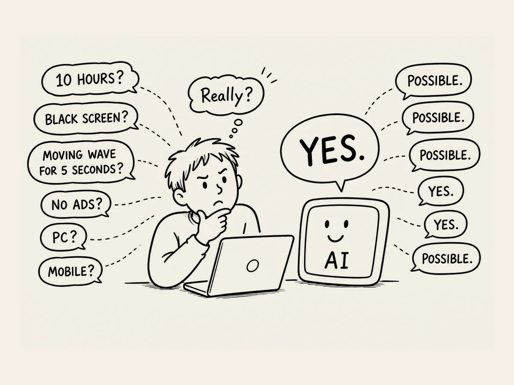

6.
Is This Really Possible? Can It Actually Work?
I knew what I was building now.
A black-screen noise website.
But as time went on, I started getting nervous.
Life had taught me: think things through before you start.
I laid out my idea to AI.
"It's a website that helps people sleep deeply and comfortably.
I need good sleep noise, and it has to keep playing the whole time they're asleep."
"That's possible. HTML5 Audio and JavaScript can handle it."
Hm.
I had no idea what that meant.
But apparently, it was possible.
"When you land on the site, you see a bunch of cards.
White noise, brown noise, fan sounds, that kind of thing.
Each one's linked to its own card."
"Yes. That's possible."
"You pick one, hit Play, and the sound starts."
"Possible."
"The screen has to be black, and for the first five seconds or so, a waveform has to move across it."
"Possible."
"The waveform gets darker and darker, and after five seconds it's a full black screen."
"Possible."
"Not a few minutes — the noise needs to keep running for about ten hours."
"Possible."
"And it has to work on both computer and phone."
"That's possible."
Everything was "possible."
I started getting suspicious.
"Hang on."
"Yes?"
"So if I describe it out loud, you can actually make it work — for real?"
"Yes. We just build it piece by piece."
I stared at the screen again, for a long moment.
AI made it all sound so easy.
I barely understood what the web even was.
I didn't know how to code.
And yet, apparently, if I could just describe what I had in mind, it could turn into an actual website.
Is this really possible?
Can it actually work?
There was only one way to find out.
Alright.
Let's give it a try.
